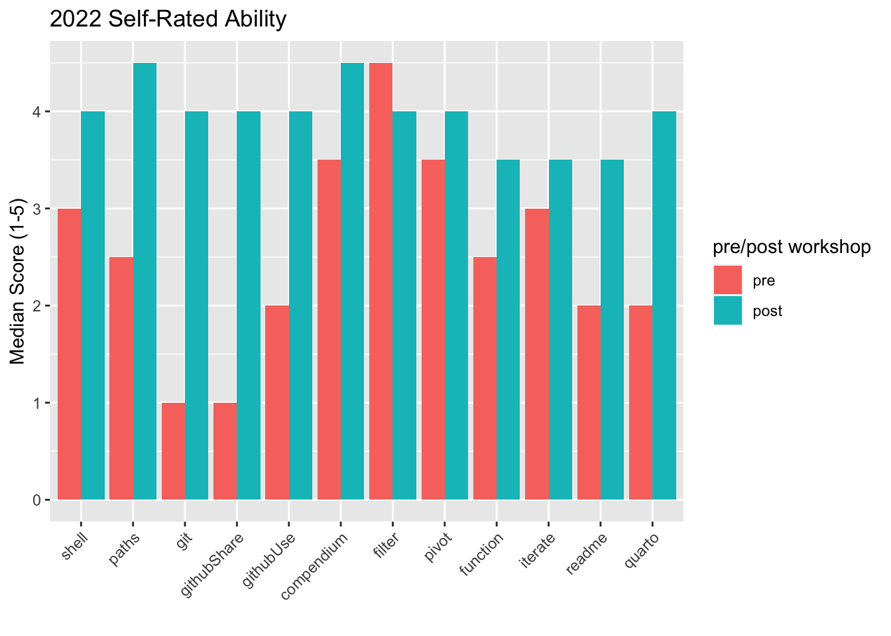
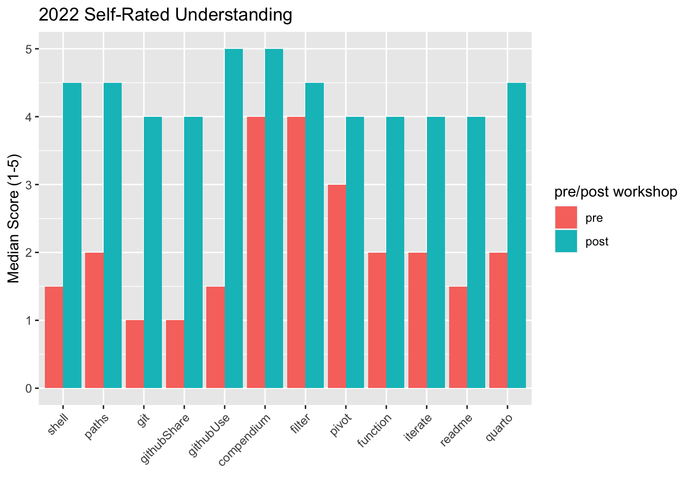
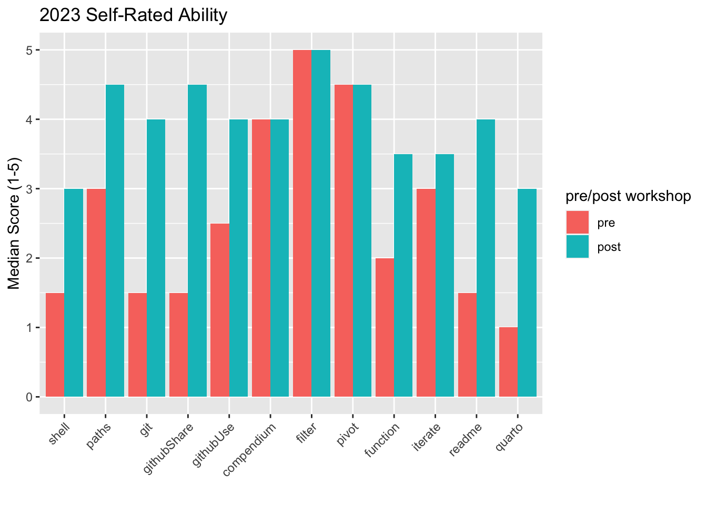
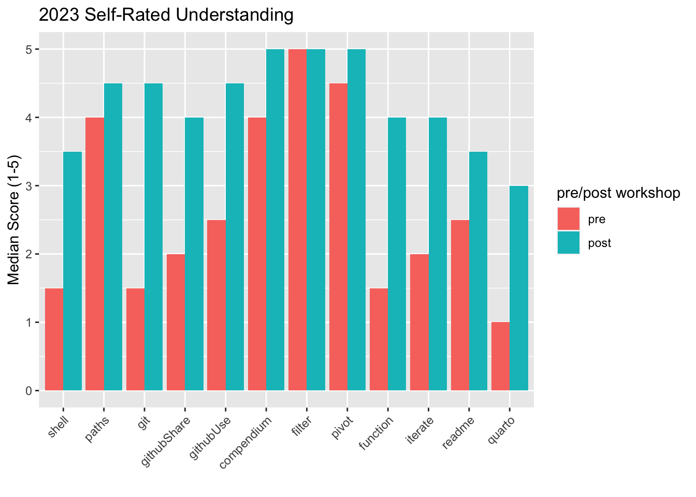

| question | question_short |
|---|---|
| shell | Navigate around filesystem using shell commands |
| paths | Use relative/absolute files paths to change working directory |
| git | Track changes to code using git |
| githubShare | Share your code using a GitHub repo |
| githubUse | Use someone else’s code from GitHub |
| compendium | Organize and name files/folders for a research project |
| filter | Remove rows from dataset based on criteria (e.g., NAs) |
| pivot | Reformat dataset from wide to long (e.g., for plotting) |
| function | Write your own R function |
| iterate | Repeat a task efficiently with a for loop |
| readme | Describe project repository with a README.md |
| quarto | Combine descriptive text and R code using Quarto |
Survey Responses
Programatically wrangle and visualize responses from Fall workshop series survey.
Warning
This script will need modification if the questions in the survey are modified!
Question Legend
2022 (n = 6)
Pre vs. post self-assessment


Free Response
Which of the following tools that we covered during the workshop have you already incorporated into your research that you were not using prior to the workshop?
| useAlready | n |
|---|---|
| Terminal window in RStudio | 5 |
| RMarkdown | 4 |
| RStudio Projects | 4 |
| git | 4 |
| GitHub | 3 |
| R functions | 3 |
| ggplot2 | 3 |
| README | 2 |
| dplyr | 2 |
| for loops / apply functions | 2 |
| if statements | 1 |
Which of the following tools that we covered during the workshop do you plan to incorporate into your research within six months after the last workshop session?
| usePlanned | n |
|---|---|
| GitHub | 5 |
| git | 5 |
| R functions | 4 |
| if statements | 4 |
| RStudio Projects | 3 |
| dplyr | 3 |
| for loops / apply functions | 3 |
| ggplot2 | 3 |
| README | 2 |
| RMarkdown | 2 |
| Terminal window in RStudio | 2 |
If you selected any of the options in the previous question, please give one concrete example of how you will implement one of these tools in your research.
- I’m hoping to use GitHUB with collaboration with another team and for potential publications. I have no previous experience with git or GitHUB and still need practice. At the very least, this is something that I am starting to understand enough to pursue and engage with in the future.
- I have converted R scripts for a couple of projects into R.projects. It’s more organized now and easier to navigate the different folders.
- We have certain datasets that we consistently use across multiple projects and updates where there are some straightforward data cleaning tasks– I’m planning to write a few functions to further systematize some of our data cleaning (instead of copy-pasting cleaning code which has been my practice up until now).
- I created an RStudio project for my thesis work and will primarily manipulate and manage my data through R.
- I share a gitlab repo with my coworkers.
- I am actually using R markdown to document my data analysis steps for my upcoming papers.
2023 (n = 6)
Pre vs. post self-assessment


Free Response
Which of the following tools that we covered during the workshop have you already incorporated into your research that you were not using prior to the workshop?
| useAlready | n |
|---|---|
| GitHub | 3 |
| dplyr | 3 |
| Quarto | 2 |
| README | 2 |
| RStudio Projects | 2 |
| Terminal window in RStudio | 2 |
| git | 2 |
| if statements | 2 |
| R functions | 1 |
| for loops / map functions | 1 |
Which of the following tools that we covered during the workshop do you plan to incorporate into your research within six months after the last workshop session?
| usePlanned | n |
|---|---|
| Quarto | 6 |
| R functions | 6 |
| for loops / map functions | 6 |
| if statements | 6 |
| GitHub | 4 |
| README | 4 |
| RStudio Projects | 4 |
| Terminal window in RStudio | 4 |
| dplyr | 4 |
| git | 4 |
If you selected any of the options in the previous question, please give one concrete example of how you will implement one of these tools in your research.
- I have RNA-se data for different treatments. Using functions and for loops will help me analyze data faster and in a reproducible way. And using quarto will help me keep all the information at one place.
- using github to track changes & not have multiple versions of rscripts saved, getting data/code publication ready
- I will clean/wrangle my data using dplyr
- I would like to introduce Quarto to my team in order to keep research compendiums more organized.
- I have been sharing code on github with my mentor
- Convert to Quarto for document my analysis.
Citation
BibTeX citation:
@online{scott2023,
author = {Scott, Eric and Diaz, Renata and Guo, Jessica and Riemer,
Kristina},
title = {Survey {Responses}},
date = {2023},
url = {https://cct-datascience.github.io/repro-data-sci//survey_responses.html},
doi = {10.5281/zenodo.8411612},
langid = {en}
}
For attribution, please cite this work as:
Scott, Eric, Renata Diaz, Jessica Guo, and Kristina Riemer. 2023.
“Survey Responses.” Reproducibility & Data Science in
R. 2023. https://doi.org/10.5281/zenodo.8411612.